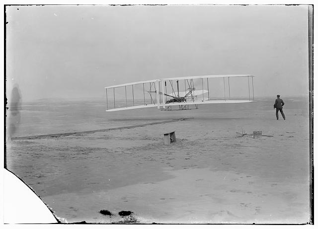
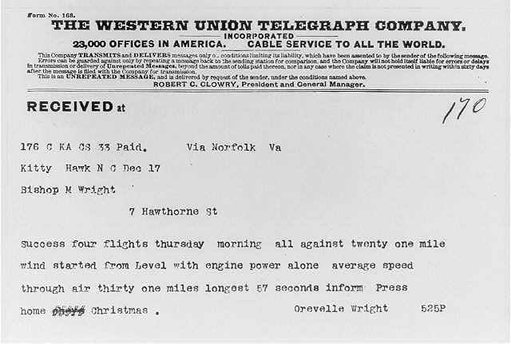

Free · No timer · No signup · Explanations after every answer
CASE FILE / PRACTICE ONLY
What can we actually conclude?
CHECK THE EVIDENCE
What can one flight photograph prove?
On December 17, 1903, a camera captured one of the Wright brothers’ flights near Kitty Hawk, North Carolina. That afternoon, Orville sent their father a telegram about the morning. Compare the two records, then write a caption you could defend.

A · The photograph The Library of Congress identifies Orville at the controls and Wilbur alongside the Flyer. Orville set up the camera and John T. Daniels released the shutter. The catalog describes this flight as lasting 12 seconds. A still image alone cannot time it. Photograph and catalog record

B · The telegram Orville’s message to his father reports four flights that morning. It gives a duration for the longest flight and asks his father to inform the press. The report covers more than the moment in the photograph. Read the telegram scanRead a short transcription
The opening reads “Success four flights thursday morning”. Later the message reads “longest 57 seconds”. Capitalization follows the scan. These are two separate excerpts. Read the full message in the Library’s account.
Compare with the archive
1. The space between the aircraft and the sand is visible. The 12-second duration comes from the photograph’s catalog description.
2. One takeoff and four reported flights are consistent. The received telegram gives 57 seconds for the longest flight. Library of Congress curators identify that figure as a transmission error and give 59 seconds. Neither figure times the first flight in the photograph. Read the curators’ account.
Try it with a group. Give partners one minute with each source. Ask each pair to write one sentence beginning “I can see…” and one beginning “Orville reported…”. Swap captions and underline the word or detail that supports each sentence.
First Flight: The Caption Desk
Give students a deliberately unreliable museum caption. In 8–10 minutes, they’ll compare three source notes, correct the caption and explain which flight each number describes.
Two US Letter pages. Give students page one and keep the answer key on page two for discussion.
Read the student worksheet on this page
Draft caption to correct
“This photograph proves the first flight lasted 57 seconds.”
Source file
Photograph. One frame shows the Flyer lifting off. A still image cannot measure elapsed time.
Telegram. Orville told his father about four flights. The message as received reported 57 seconds for the longest.
Archive account. The Library of Congress identifies the first flight as 12 seconds and the fourth, longest flight as 59.
Your edit
Which flight does 57 refer to in the telegram? Which source supplies the first flight’s duration?
Write one or two sentences. Distinguish what the image shows from how you know the timing.
Briefly reconcile 57 and 59 without assuming who caused the difference.
Read the facilitator key
Model caption: The photograph shows the Flyer lifting off on December 17, 1903. The Library of Congress identifies this as Orville Wright’s first flight, which lasted 12 seconds. The still image alone cannot tell us its duration.
What to look for: A good edit attributes the 12-second duration to the archive. The received telegram reports 57 seconds for the longest flight. The Library of Congress and the Smithsonian’s telegraph-key record give 59 seconds for that flight. The records do not establish who caused the discrepancy.
Discussion: Even with the two-second difference, what is the telegram still evidence of? One answer: what was communicated to the family that day.
Educators and editors may copy, print, adapt and share the original worksheet with credit to Honest Little Apps. Mark substantive edits. Archival records retain their own reuse terms.
Records courtesy of the Library of Congress. Photograph, Prints and Photographs Division, LC-DIG-ppprs-00626. Telegram, Orville Wright to Milton Wright, Wright Papers, December 17, 1903, digital image cph.3b12982.
ARCHIVE DESK · WASHINGTON → BALTIMORE
One message, three different roles
A museum label reads: “The person who tapped out the message chose its words.” Reconstruct the exchange on May 24, 1844, then decide whether the label holds up.
Evidence B: credit. The catalog entry describing the inscription says Morse credited Annie Ellsworth with suggesting the words. These are related descriptions of the transmission, not independent eyewitness accounts.
Evidence limit: The tape and its catalog record support an attribution. They do not tell us what any of these people privately felt. This original exercise is separate from the iPhone game.
CASE 1 / 60 correct so far
Invented teaching scenario, not an authentic historical document.
SIX CASES REVIEWED
Evidence first. Story second.
Your score is for these six practice questions, not a measure of intelligence or historical expertise.
Keep asking: who made this, for what purpose, and what would I need to check next?
Identify the creator, date and setting. A firsthand account gives one perspective; it is not a guarantee that every detail is accurate.
02 / PURPOSE
Why was it made?
A private letter, campaign poster and later history book do different jobs. Ask who the intended audience was and what the creator wanted to communicate.
03 / CHECK
What else supports it?
Compare sources. Look for agreement, contradiction and missing context. Distinguish the detail you can observe from the story you are adding.
TAKE THE NEXT CASE
Turn curiosity into an investigation.
PastRush offers history investigations with labelled exhibits, source comparisons and explanations. Start with six free investigations; additional cases are available through an optional one-time purchase.
Check the listing for current features and compatibility. This browser exercise is a separate companion, not a screen from the app. Progress does not transfer.
Read a source. Weigh a claim. Follow the evidence.
A useful habit for any historical question.
Primary sources are materials connected directly to the people or period being studied. Secondary works analyze or interpret evidence. The research question matters when deciding how to use a source.
No. Ask about the creator's access, purpose and perspective, and compare the account with other evidence.
Which exhibits are historical records?
The flight photograph and telegram come from Library of Congress collections. The six scored cases use fictional scenarios written for this exercise.
Will my score be saved?
No. Scores remain only in this page session. Restarting or reloading begins again.
Put the date in context.
Unsure which century a source belongs to? Use the BCE and CE century finder to see the boundaries and practise the tricky transitions.
Put the telegram exercise on your class page
Ask readers to classify four claims about the telegram as a reported event, a requested action or an unconfirmed outcome. Each choice has an explanation.
Paste this into a custom HTML block on your class site. The exercise works at phone width. Answers stay in the open frame; reloading starts a new attempt.
If your school site blocks frames or scripts, use the direct exercise link instead.